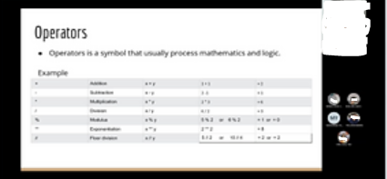

Organiser
Class Representative

My Leadership Experience
Led the class in a project which will benefit the community by using our skills. Due to the Covid-19 restrictions, we pre-recorded videos and made simple projects with solution and detailed explanation on the topics we touched on (Python for beginners and Electronics)
Managed to get a couple of students from a secondary school to execute a mini presentation to them on the introductory topics and to our surprise, some of the students are showing more interest to enter Electronics or Engineering courses related to programming.
In addition, I am humbled to be given the opportunity to be a class rep throughout all these years in Temasek Polytechnic!
I try my best to ensure that no one was left behind in class by giving constant reminders of upcoming submissions, guiding those that has doubts in their projects in my best ability.
I enjoy the process of helping and gaining more knowledge at the same time.
Academics aside, I also persuaded some of my classmates to participate in various activities in school such as volunteering, virtual sports events, etc.
This leadership role allowed me to create a better relationship with my classmates and bring them together.